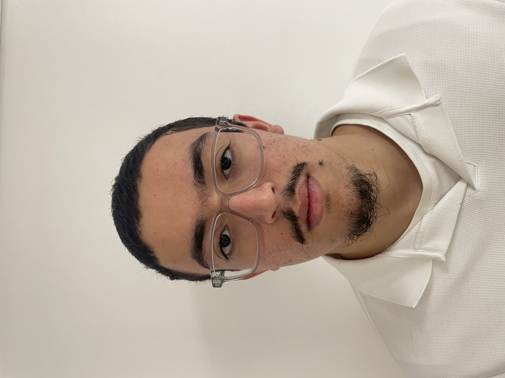

02 — Navigation
Explorer le portfolio
Le cœur de ce portfolio : ma 3ᵉ année ESE, avec le projet Kart Électrique et mon stage R&D drone chez CapSec.
Électronique & Systèmes Embarqués
Étudiant en 3ᵉ année de BUT Génie Électrique et Informatique Industrielle, parcours Électronique et Systèmes Embarqués à l'IUT de Troyes. Je conçois des systèmes embarqués de bout en bout — du firmware bas niveau au pilotage de drones autonomes — avec une passion pour l'électronique de pointe.

Tout au long de mon cursus, ma curiosité pour les matières scientifiques m'a naturellement conduit vers le Génie Électrique et Informatique Industrielle. Cette envie de comprendre — et de maîtriser — le monde technique qui m'entoure est le fil rouge de mon parcours.
Aujourd'hui spécialisé en Électronique et Systèmes Embarqués, j'évolue à l'intersection du matériel et du logiciel : firmware sur microcontrôleur, conditionnement de signal analogique, routage PCB, communication réseau et, plus récemment, intelligence artificielle embarquée appliquée aux drones autonomes de recherche et sauvetage.
Mon objectif : concevoir des systèmes embarqués fiables, robustes et utiles, jusqu'au déploiement en conditions réelles.
Le cœur de ce portfolio : ma 3ᵉ année ESE, avec le projet Kart Électrique et mon stage R&D drone chez CapSec.
Du premier circuit imprimé soudé aux systèmes embarqués les plus avancés — explorez chaque année du parcours.
Les fondamentaux : multimètre, régulation thermique, robot suiveur de ligne, automatisme & énergie, shield Arduino.
Arduino KiCad GRAFCET
Explorer →
Voiture autonome (Qt/C++), banc de test haut-parleur, brushless FPGA (VHDL), escape bot, et 1ᵉʳ stage CapSec.
C++/Qt VHDL 🏆 Cachan
Explorer →
Kart électrique (ATmega328P) & stage R&D de 3 mois sur le drone autonome ARODE.
Embarqué IA Drone
Explorer →
.jpeg)